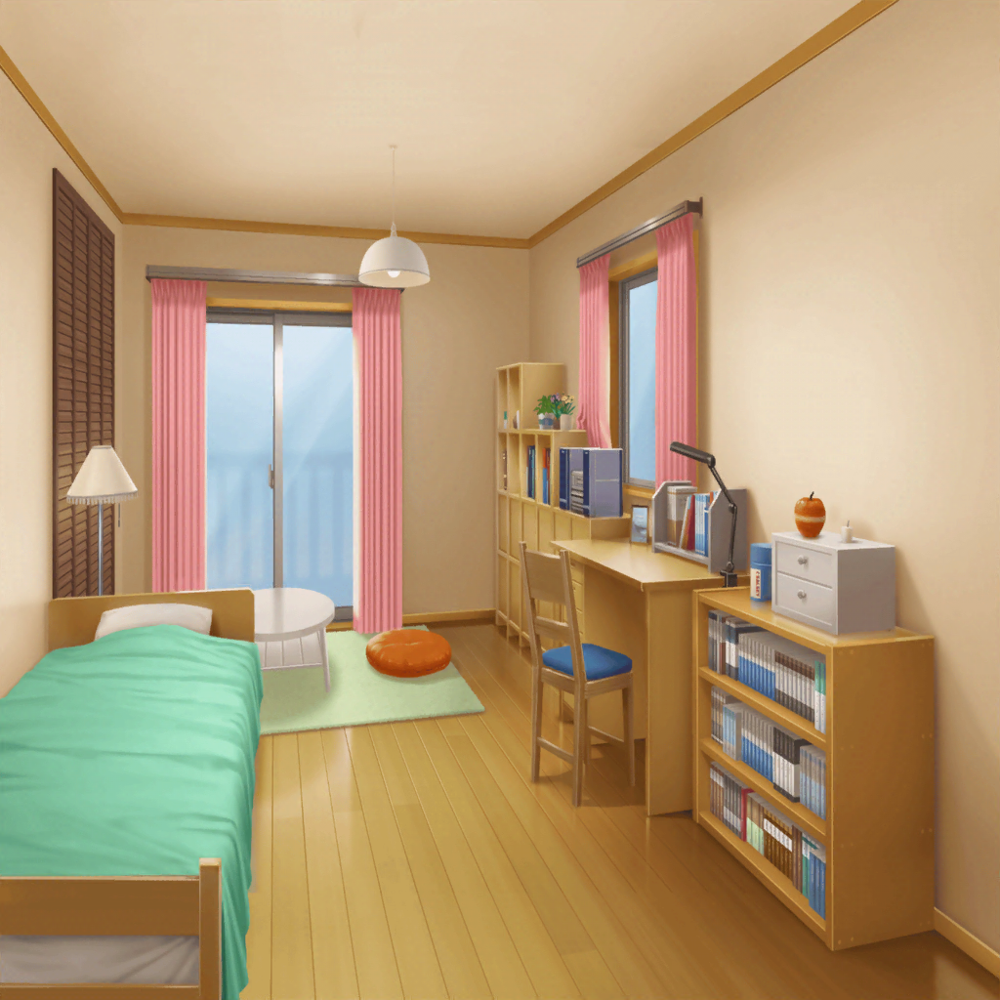

沙綾
こらっ、紗南！ 店の前ではしゃがない！
転ぶよっ……って危ないっ！
紗南
えへへっ♪
お姉ちゃん、こっちこっち～！
紗南
えっ……わぁっ！？
沙綾
わぁっ！ 紗南がぶつかってごめんなさい！
お客様……って、{{userName}}さん？
沙綾
大丈夫？ ケガはなかった？
沙綾
そっか、よかった
紗南
……ひっ、ひっく、うぇ～ん！
沙綾
紗南！ 大丈夫？
沙綾
あーもう、よしよし。
だからダメって言ったでしょ？
沙綾
すりむいたりは……してないみたいね。
紗南、大丈夫だよ。ほら、痛くないよー？
紗南
ひっく、ひっく……
沙綾
よしよし……まいったなー
沙綾
君、どうしたの？
ポケットになにか？
紗南
……ひっく……えっ……キャンディ？
紗南
……くれるの？
沙綾
よかったね、紗南。
人に親切にしてもらったら、どうするんだっけ？
紗南
……ありがとう
沙綾
よし。
それから、{{userName}}さんにぶつかっちゃったことは？
紗南
……ごめんなさい……
沙綾
よしっ！ 君、ありがとね。
気使わせちゃって……
紗南
……お姉ちゃんの、お友達なの？
沙綾
そうだよ。{{userName}}さん。
ほら、ご挨拶して
紗南
……{{userName}}さん。こんにちは
沙綾
うちの妹がごめんねー
沙綾
今日もうちのパン買いに来てくれたんだ。
いつもありがとね
千紘
沙綾、紗南。何騒いでるの？
千紘
あら、沙綾のお友達？
沙綾
そう、前に話したでしょ。{{userName}}さん
千紘
そうなの、いらっしゃい。
沙綾、上がってもらったら？
沙綾
うーん、そうだね。キャンディのお礼もあるし。
お茶ぐらい出すから上がってってよ
沙綾
……なーに遠慮してるの。
ほら、早く早く！

沙綾
お待たせ。コーヒーでよかったかな？
はい、どうぞ
沙綾
何見てたの？ ……あぁ、シュシュか
沙綾
あはは、いっぱいあるでしょ？
集めるの趣味なんだ。
沙綾
かわいいの見つけると、つい買っちゃうんだよね
沙綾
こないだも、たえと有咲と楽器屋に行った帰りに、
ついつい買っちゃってさ
沙綾
それがこれ。どう、かわいいでしょ？
沙綾
でしょでしょ♪ これね、ポピパのみんなで
おそろいにしようって言って、合わせて買ったんだー
沙綾
おたえは最初から賛成してくれたけど、
有咲は『私の趣味じゃない！』なんて言っててね
沙綾
けど、ホントはおそろいで買うの、うれしかったみたい。
ふふっ、素直じゃないよねー
沙綾
香澄とりみにも持って行ったら大喜びでさ。
いやー、提案した甲斐があったよー
沙綾
バンドでおそろいのアクセって、いいよね。
みんな一緒だよ、って気持ちになれて
沙綾
今度のライブは、メンバー全員でこれをつけて出ようと
思ってるんだ。しっかりチェックしててね
沙綾
……あれ、もう帰っちゃうの？
沙綾
そっか。じゃあ玄関まで送るね
沙綾
今日はありがとね。
……あっ、そうだ
沙綾
……えっと、これ。さっきは紗南が
ぶつかっちゃって、パン買いそびれてたでしょ？
沙綾
山吹ベーカリー自慢のチョココロネ。
よかったら、持って行って
沙綾
お礼を言うのはこっちだよ～。
今日はありがとう。また来てね！